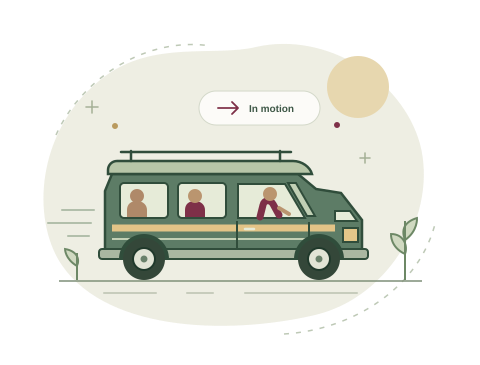

Understanding Forces and Newton’s Laws
Build your foundation · 2 hours
JavaScript is off. All lesson content is available below. Enable JavaScript to use the calculator, interactive questions, and saved progress.
Module 1 · A foundation for motion
A moving jeepney. A push on a cart. A book resting on your desk. Discover the simple ideas behind the motion all around you.

Before we begin, a little curiosity
Keep your first idea in mind. We’ll return to it in Newton’s First Law.
Build your foundation · 2 hours
Course outline only
Course outline only
Make this time yours. Have paper ready for calculations. Read, make a prediction, try an activity, then use the feedback to rethink your answer. The two-hour estimate includes practice, reflection, and breaks; nothing is timed. Start here takes about 10 minutes.
Opening a door, kicking a ball, pulling a bag: you already know what forces feel like. Let’s give those experiences a name.
Your goal: describe a force and find the net force in one dimension.
A force is a push or pull acting on an object. Its size is called its magnitude, measured in newtons (N). Its direction tells us where it acts. “15 N to the right” tells us both.
A nonzero net force can change an object’s speed, direction, or both. That change in velocity is called acceleration.
A push can make a resting cart speed up. Friction can make a rolling ball slow down.
A sideways force can turn a moving ball. Its velocity changes even if its speed stays the same.
The net force is the combined effect of all forces acting on one object, taking direction into account. In a straight line, add forces in the same direction and subtract forces in opposite directions.
The net force is 15 − 5 = 10 N to the right, in the direction of the larger force.
Equal opposing forces on an object give a net force of zero. It stays at rest or keeps moving with the same speed and direction.
A nonzero net force changes velocity. Acceleration points in the direction of the net force; that need not be the direction the object is already moving.
Pause & predict
15 N right and 15 N left add to zero net horizontal force. There is no horizontal acceleration. A moving box would keep its velocity if all horizontal forces really stayed balanced.
An object does not need a net force to keep moving. It needs a net force to change how it is moving.
Your goal: explain inertia and connect it to mass and everyday motion.
An object stays at rest or keeps moving at constant velocity unless a nonzero net external force acts on it.
Inertia is an object’s tendency to resist a change in velocity. It is a property of the object, not a force that pushes it.
Mass, measured in kilograms (kg), measures resistance to acceleration. A greater mass needs more net force for the same acceleration.
Before braking, you and the jeepney move together. When it slows, your body tends to keep its forward velocity. You move forward relative to the slowing vehicle until a force changes your motion.
No new forward force is needed to explain this. Your body is continuing the motion it already had.
Gravity pulls it down and the desk pushes it up. These balanced forces give zero net force, so the book remains at rest. A sideways push can change that.
Think about it
Pause for a moment. Explain it to yourself using the words inertia and force.
Your body tends to keep moving forward because of inertia. A seatbelt applies a force that slows your body along with the vehicle, helping prevent you from being thrown forward. The seatbelt changes your motion; it does not “remove” your inertia.
A useful distinction
Friction and air resistance act against its motion, producing a net force that slows it down. Newton’s First Law describes what happens when the net force is zero; that is not the case for this slowing ball.
The answer depends on two things: the net force on an object and its mass.
Your goal: calculate acceleration and predict the effect of changing force or mass.
Velocity describes speed and direction. Acceleration tells us how quickly velocity changes. Speeding up, slowing down, and turning are all forms of acceleration.
For a constant mass, acceleration points in the direction of the net force. We’ll work along one horizontal line: right is positive; left is negative.
Identify the net force and mass, divide, and include the unit and direction.
This means velocity changes by 4 m/s toward the right each second while that net force acts. It does not mean the box’s speed is 4 m/s.
Example B · Connect the two ideas
Find the net force first. Then use it in a = Fnet / m.
The net horizontal force is 15 N − 5 N = 10 N to the right. Then a = 10 N / 5 kg = 2 m/s² to the right. Use the net force of 10 N, rather than the applied force of 15 N alone.
First predict what will happen. Then change the force or mass and compare your result.
m/s²
→ To the right
20 N ÷ 5 kg = 4 m/s²
Double the net force from 20 N to 40 N on 5 kg: acceleration doubles from 4 to 8 m/s².
Double the mass from 5 kg to 10 kg with 20 N: acceleration becomes half as large, from 4 to 2 m/s².
Try it on paper
Use left as negative: a = −6 N / 2 kg = −3 m/s², or 3 m/s² to the left. The minus sign tells you direction, not “less acceleration.”
When you push on something, it pushes back on you. These two forces happen at the same time.
Your goal: identify an interaction pair and explain why its forces do not cancel.
When object A exerts a force on object B, object B exerts an equal-magnitude force in the opposite direction on object A.
Watch the hands reach the wall. Once the person pushes, do the two forces appear together?
Person → wall30 N right
Wall → person30 N left
The person pushes the wall right with 30 N. At the same time, the wall pushes the person left with 30 N. A stationary object can exert a force.
Reduced motion is enabled. Use Next step to view still frames at your own pace.
“The two forces cancel each other.”
They act on different objects. To find a net force, combine only the forces acting on the same object.
The wall pushes you with 30 N in the opposite direction. It can exert a force even though it stays still.
Find the pair
The ground exerts a forward frictional force on your foot. Your backward force acts on the ground; the ground’s forward force acts on you. These are a Newton’s Third Law pair.
Real objects often experience more than one force. Start by naming what acts on the object and in which direction.
Your goal: recognize familiar forces and distinguish horizontal and vertical effects.
The push on the box, in this example toward the right.
The surface resists the box’s sliding motion, toward the left.
Earth pulls the box downward. This force is the box’s weight.
The surface pushes the box upward, perpendicular to the surface.
If the upward and downward forces balance, vertical acceleration is zero. The box can still accelerate horizontally if the applied force and friction are unbalanced.
The net horizontal force is 10 N right, so the box accelerates right. Its vertical acceleration is zero.
Keep the laws distinct. The normal force and gravity both act on the box; they are not a Third Law pair. We’ll explore force diagrams in Module 2. For now, focus on identifying forces and their directions.
A student pushes a cart. Before reaching for the formula, make a prediction about what happens when just one thing changes.
Your goal: use a = Fnet / m to explain two everyday comparisons.
The cart has a mass of 5 kg and a net force of 20 N to the right. Its acceleration is 4 m/s² to the right. Each scenario below starts from this same original cart.
Acceleration doubles: 40 N / 5 kg = 8 m/s² right.
Acceleration halves: 20 N / 10 kg = 2 m/s² right.
Make your predictions above, then watch. All three carts start from rest at the same place and time. Each net force stays constant and points right.
Distance: 8.0 mSpeed: 8.0 m/s
Distance: 16.0 mSpeed: 16.0 m/s
Distance: 4.0 mSpeed: 4.0 m/s
One distance scale and one clock for all three carts. Playback shows two model seconds at half speed. Speeds are to the right.
After 2 seconds: the original cart travels 8 m, double the force gives 16 m, and double the mass gives 4 m. Greater acceleration means speed increases more each second.
Reduced motion is enabled. Use Next step to view still frames at your own pace.
The view pauses after 2 seconds so you can compare results. The carts would keep accelerating if the same net forces continued. These are motion snapshots, not a race.
Take it one step further
Use the calculator or work it out on paper before opening the explanation.
The changes balance out: a = 40 N / 10 kg = 4 m/s² right, the same acceleration as the original cart. The ratio Fnet / m stays the same.
Explore both scenarios to complete this activity. An incorrect prediction is a useful starting point—read the feedback and try again.
Six questions to connect the ideas. This is practice, not an exam. Use the feedback, revisit a lesson, and try again whenever you need to.
Your first-try score helps you spot what to review. Every question can be retried.
1. A push or pull on an object. 2. 12 / 4 = 3 m/s² right. 3. False: mass alone does not determine velocity. 4. The wall exerts an equal, opposite force on the person. 5. Velocity stays constant: same speed and direction. 6. The full cart has greater mass, so its acceleration is smaller.
You’ve explored the ideas behind pushes, pulls, and changes in motion. Keep these connections with you the next time you ride, walk, or move something.
Objects resist changes in motion. With zero net force, velocity stays constant—including staying at rest.
Net force, mass, and acceleration are related by Fnet = ma. At fixed mass, more net force means greater acceleration. At fixed net force, more mass means less acceleration.
Interactions produce equal and opposite forces acting on different objects.
Return to your first idea
Explain it again now. What would you add to your first answer? Then choose one other everyday example and explain which law helps you understand it.
Your body tends to continue moving forward while the vehicle slows. This is inertia, described by Newton’s First Law. A force is needed to slow your body down. You move forward relative to the jeepney, not because a new forward force has appeared.